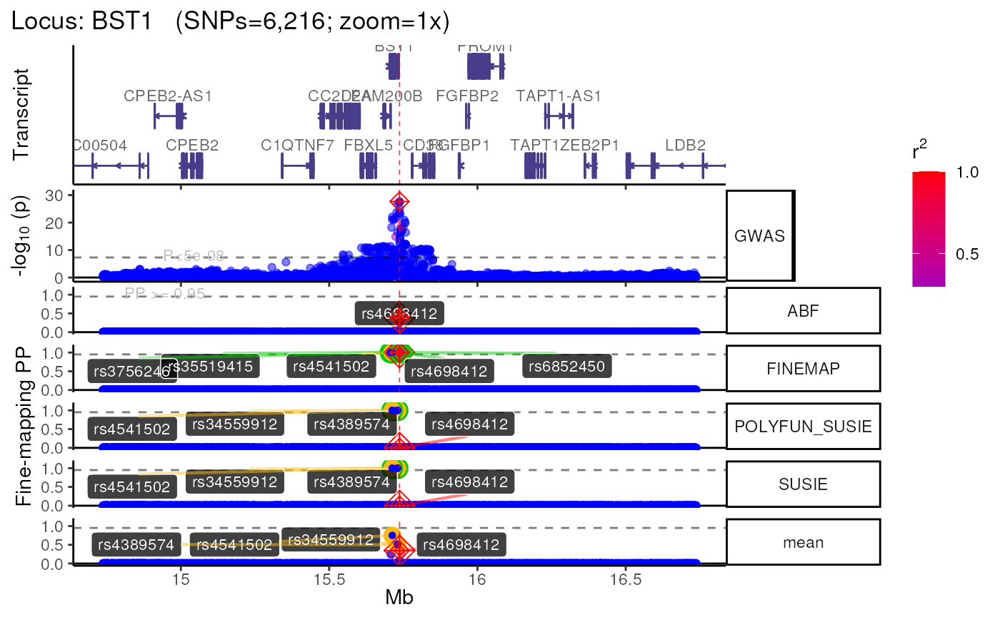
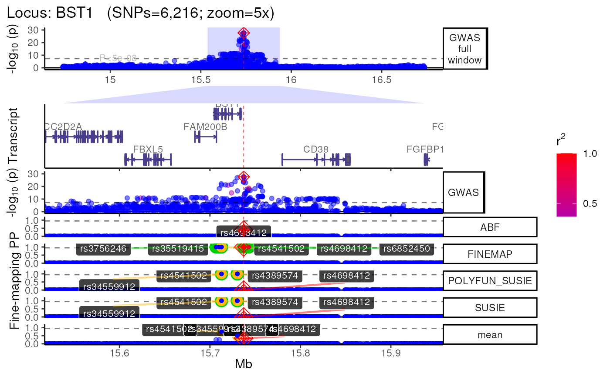
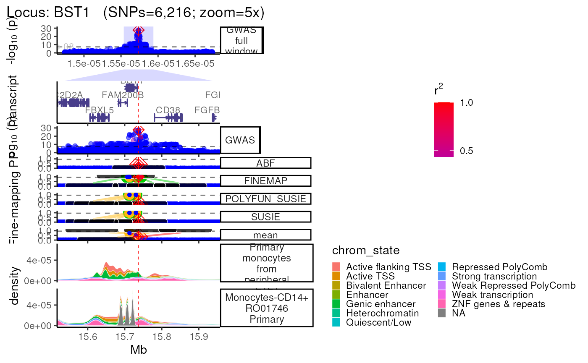
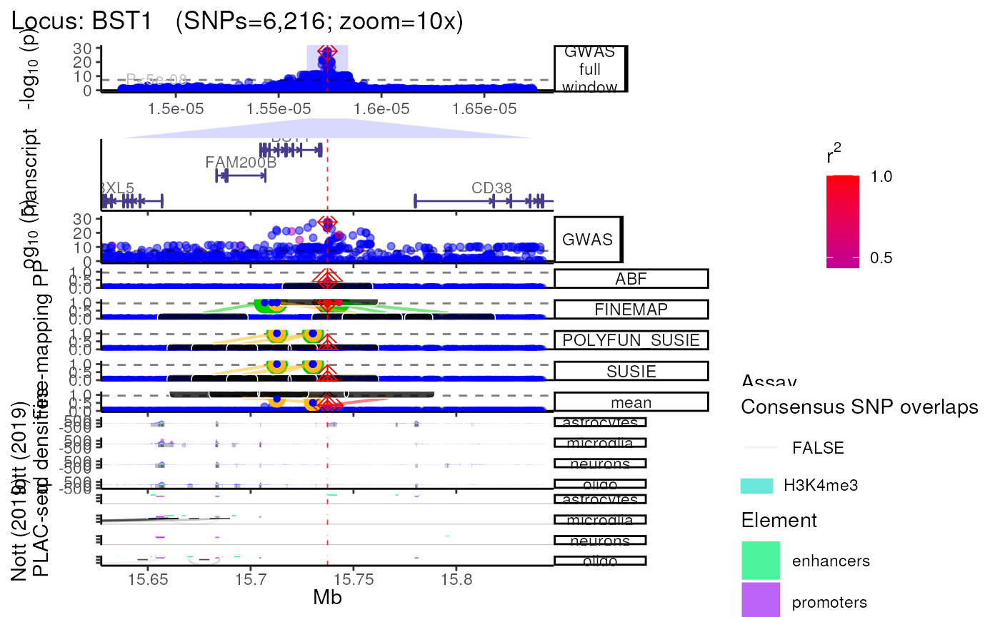

echoplot: Getting Started
¶ Author:
Brian M. Schilder ¶
¶ Updated:
Nov-07-2022 ¶
Source: vignettes/echoplot.Rmd
echoplot.RmdPlotting loci with echoplot
echoplot contains various functions that can be used
separately
from the comprehensive echolocatoR::finemap_loci()
pipeline.
Generate a multi-view plot of a given locus using
echoplot::plot_locus().
- You can mix and match different tracks and annotations using the
different arguments (see
?plot_locusfor details).
The plot is centered on the lead/index SNP. If a list is supplied to
zoom * plot_locus() returns a series of ggplot
objects bound together with patchwork.
One can further modify this object using ggplot2 functions
like + theme(). + The modifications will be applied to all
tracks at once.
- Save a high-resolution versions the plot by setting
save_plot=T.- Further increase resolution by adjusting the
dpiargument (default=300). - Files are saved in jpg format by default, but users can
specify their preferred file format
(e.g.
file_format="png") - Adjust the
heightandwidthof the saved plot using these respective arguments. - The plot will be automatically saved in the locus-specific directory
as:
*multiview__ .jpg*.
- Further increase resolution by adjusting the
Load example data
Load example dataset of the results from fine-mapping the BST1 locus
with finemap_loci(). Original data comes from the recent
Nalls et al. (2019) Parkinson’s disease GWAS (see ?BST1 for
details).
Full window
trk_plot <- echoplot::plot_locus(dat=finemap_DT,
LD_matrix=LD_matrix,
LD_reference=LD_reference,
locus_dir=locus_dir,
save_plot=FALSE,
show_plot=show_plot,
zoom=zoom) ## +-------- Locus Plot: BST1 --------+## + support_thresh = 2## + Calculating mean Posterior Probability (mean.PP)...## + 4 fine-mapping methods used.## + 7 Credible Set SNPs identified.## + 3 Consensus SNPs identified.## + Filling NAs in CS cols with 0.## + Filling NAs in PP cols with 0.## LD_matrix detected. Coloring SNPs by LD with lead SNP.## Filling r/r2 NAs with 0## ++ echoplot:: GWAS full window track## ++ echoplot:: GWAS track## ++ echoplot:: Merged fine-mapping track## Melting PP and CS from 5 fine-mapping methods.## ++ echoplot:: Adding Gene model track.## Converting dat to GRanges object.## Loading required namespace: EnsDb.Hsapiens.v75## max_transcripts= 1 .## 16 transcripts from 16 genes returned.## Fetching data...OK
## Parsing exons...OK
## Defining introns...OK
## Defining UTRs...OK
## Defining CDS...OK
## aggregating...
## Done
## Constructing graphics...
## + Adding vertical lines to highlight SNP groups...
## +>+>+>+>+ zoom = 10x +<+<+<+<+
## + echoplot:: Get window suffix...
## + Constructing zoom polygon...
## + Highlighting zoom origin...
## + Removing subplot margins...
## + Reordering tracks...## [1] "+ Ensuring last track shows genomic units..."## + Aligning xlimits for each subplot...
## + Checking track heights...
print(trk_plot)## $`10x`## Found more than one class "simpleUnit" in cache; using the first, from namespace 'hexbin'## Also defined by 'ggbio'
At multiple zooms
- You can easily generate the same locus plot at multiple zoomed in
views by supplying a list to
zoom.
- This list can be composed of zoom multipliers
(e.g.
c("1x", "2x")), window widths in units of basepairs (e.g.c(5000, 1500)), or a mixture of both (e.g.c("1x","4x", 5000, 2000)). - Each zoom view will be saved individually with its respective scale
as the suffix (e.g.
multiview.BST1.UKB.4x.jpg).
- Each zoom view is stored as a named item within the returned list.
trk_zooms <- plot_locus(dat=finemap_DT,
LD_matrix=LD_matrix,
LD_reference=LD_reference,
locus_dir=locus_dir,
save_plot=FALSE,
show_plot=show_plot,
zoom = c("1x","5x","10x")) ## +-------- Locus Plot: BST1 --------+## + support_thresh = 2## + Calculating mean Posterior Probability (mean.PP)...## + 4 fine-mapping methods used.## + 7 Credible Set SNPs identified.## + 3 Consensus SNPs identified.## + Filling NAs in CS cols with 0.## + Filling NAs in PP cols with 0.## LD_matrix detected. Coloring SNPs by LD with lead SNP.## Filling r/r2 NAs with 0## ++ echoplot:: GWAS full window track## ++ echoplot:: GWAS track## ++ echoplot:: Merged fine-mapping track## Melting PP and CS from 5 fine-mapping methods.## ++ echoplot:: Adding Gene model track.## Converting dat to GRanges object.## max_transcripts= 1 .## 16 transcripts from 16 genes returned.## Fetching data...OK
## Parsing exons...OK
## Defining introns...OK
## Defining UTRs...OK
## Defining CDS...OK
## aggregating...
## Done
## Constructing graphics...
## + Adding vertical lines to highlight SNP groups...
## +>+>+>+>+ zoom = 1x +<+<+<+<+
## + echoplot:: Get window suffix...
## + echoplot:: Removing GWAS full window track @ zoom=1x
## + Removing subplot margins...
## + Reordering tracks...## [1] "+ Ensuring last track shows genomic units..."## + Aligning xlimits for each subplot...
## + Checking track heights...
## +>+>+>+>+ zoom = 5x +<+<+<+<+
## + echoplot:: Get window suffix...
## + Constructing zoom polygon...
## + Highlighting zoom origin...
## + Removing subplot margins...
## + Reordering tracks...## [1] "+ Ensuring last track shows genomic units..."## + Aligning xlimits for each subplot...
## + Checking track heights...
## +>+>+>+>+ zoom = 10x +<+<+<+<+
## + echoplot:: Get window suffix...
## + Constructing zoom polygon...
## + Highlighting zoom origin...
## + Removing subplot margins...
## + Reordering tracks...## [1] "+ Ensuring last track shows genomic units..."## + Aligning xlimits for each subplot...
## + Checking track heights...
names(trk_zooms) # Get zoom view names## [1] "1x" "5x" "10x"
print(trk_zooms)## $`1x`
##
## $`5x`
##
## $`10x`Return as list
- For even further control over each track of the multi-view plot,
specify
plot_locus(..., return_list=TRUE)to instead return a named list (nested within each zoom view list item) ofggplotobjects which can each be modified individually. - Once you’ve made your modifications, you can then bind this list of
plots back together with
patchwork::wrap_plots(tracks_list, ncol = 1).
trk_plot_list <- echoplot::plot_locus(dat=finemap_DT,
LD_matrix=LD_matrix,
LD_reference=LD_reference,
locus_dir=locus_dir,
save_plot=FALSE,
show_plot=show_plot,
zoom=zoom,
return_list=TRUE) ## +-------- Locus Plot: BST1 --------+## + support_thresh = 2## + Calculating mean Posterior Probability (mean.PP)...## + 4 fine-mapping methods used.## + 7 Credible Set SNPs identified.## + 3 Consensus SNPs identified.## + Filling NAs in CS cols with 0.## + Filling NAs in PP cols with 0.## LD_matrix detected. Coloring SNPs by LD with lead SNP.## Filling r/r2 NAs with 0## ++ echoplot:: GWAS full window track## ++ echoplot:: GWAS track## ++ echoplot:: Merged fine-mapping track## Melting PP and CS from 5 fine-mapping methods.## ++ echoplot:: Adding Gene model track.## Converting dat to GRanges object.## max_transcripts= 1 .## 16 transcripts from 16 genes returned.## Fetching data...OK
## Parsing exons...OK
## Defining introns...OK
## Defining UTRs...OK
## Defining CDS...OK
## aggregating...
## Done
## Constructing graphics...
## + Adding vertical lines to highlight SNP groups...
## +>+>+>+>+ zoom = 10x +<+<+<+<+
## + echoplot:: Get window suffix...
## + Constructing zoom polygon...
## + Highlighting zoom origin...
## + Removing subplot margins...
## + Reordering tracks...## [1] "+ Ensuring last track shows genomic units..."## + Aligning xlimits for each subplot...
## + Checking track heights...
view1_list <- trk_plot_list[[zoom]]
names(view1_list) # Get track names from a particular zoom view## [1] "GWAS full window" "zoom_polygon" "Genes" "GWAS"
## [5] "Fine-mapping"Modify a specific tracks within a view.
# Modify your selected track
modified_track <- view1_list$GWAS +
ggplot2::labs(title = "Modified GWAS") +
ggplot2::theme_dark() +
ggplot2::theme(title = ggplot2::element_text(hjust = .5))
# Put it back into your track list
view1_list[["GWAS"]] <- modified_track
# Remove a plot you don't want
view1_list[["Genes"]] <- NULL
# Specify the relative heights of each track (make sure it matches your new # of plots!)
track_heights <- c(.3,.1,.3,1)
# Bind them together and plot
fused_plot <- patchwork::wrap_plots(view1_list,
heights = track_heights,
ncol = 1)
print(fused_plot)
Using XGR annotations
- Whenever you use annotation arguments
(e.g.
xgr_libnames,Roadmap,nott_epigenome) the annotations that overlap with your locus will automatically be saved asGRangesobjects in a locus-specific subdirectory:
results// / /annotation - If a selected annotation has previously been downloaded and stored
for that locus,
plot_locus()will automatically detect and import it to save time.
trk_plot.xgr <- echoplot::plot_locus(dat=finemap_DT,
LD_matrix=LD_matrix,
LD_reference=LD_reference,
locus_dir=locus_dir,
xgr_libnames=c("ENCODE_TFBS_ClusteredV3_CellTypes"),
save_plot=FALSE,
show_plot=show_plot,
zoom=zoom)## +-------- Locus Plot: BST1 --------+## + support_thresh = 2## + Calculating mean Posterior Probability (mean.PP)...## + 4 fine-mapping methods used.## + 7 Credible Set SNPs identified.## + 3 Consensus SNPs identified.## + Filling NAs in CS cols with 0.## + Filling NAs in PP cols with 0.## LD_matrix detected. Coloring SNPs by LD with lead SNP.## Filling r/r2 NAs with 0## ++ echoplot:: GWAS full window track## ++ echoplot:: GWAS track## ++ echoplot:: Merged fine-mapping track## Melting PP and CS from 5 fine-mapping methods.## ++ echoplot:: Adding Gene model track.## Converting dat to GRanges object.## max_transcripts= 1 .## 16 transcripts from 16 genes returned.## Fetching data...OK
## Parsing exons...OK
## Defining introns...OK
## Defining UTRs...OK
## Defining CDS...OK
## aggregating...
## Done
## Constructing graphics...
## echoannot:: Plotting XGR annotations.
## Start at 2022-11-07 16:04:00
##
## 'ENCODE_TFBS_ClusteredV3_CellTypes' (from http://galahad.well.ox.ac.uk/bigdata/ENCODE_TFBS_ClusteredV3_CellTypes.RData) has been loaded into the working environment (at 2022-11-07 16:04:10)
##
## End at 2022-11-07 16:04:10
## Runtime in total is: 10 secs
##
## Converting dat to GRanges object.
## 1,579 query SNP(s) detected with reference overlap.## Warning: Ignoring unknown parameters: facets## Warning in max(xlim): no non-missing arguments to max; returning -Inf## + Adding vertical lines to highlight SNP groups...## Warning: Groups with fewer than two data points have been dropped.## Warning: Groups with fewer than two data points have been dropped.## Warning: Removed 2 rows containing missing values (position_stack).## +>+>+>+>+ zoom = 10x +<+<+<+<+
## + echoplot:: Get window suffix...
## + Constructing zoom polygon...
## + Highlighting zoom origin...
## + Removing subplot margins...
## + Reordering tracks...## [1] "+ Ensuring last track shows genomic units..."## Warning: Groups with fewer than two data points have been dropped.## Warning: Groups with fewer than two data points have been dropped.## Warning: Removed 2 rows containing missing values (position_stack).## + Aligning xlimits for each subplot...## Warning: Groups with fewer than two data points have been dropped.## Warning: Groups with fewer than two data points have been dropped.## Warning: Removed 2 rows containing missing values (position_stack).## + Checking track heights...
print(trk_plot.xgr)## $`10x`## Warning: Groups with fewer than two data points have been dropped.
## Groups with fewer than two data points have been dropped.## Warning: Removed 2 rows containing missing values (position_stack).Using Roadmap annotations
- Using the
Roadmap=Tandroadmap_query="<query>"arguments searches the Roadmap for chromatin mark data across various cell-types, cell-lines and tissues.
- Note that Roadmap queries requires
tabixto be installed on your machine, or within a conda environment (conda_env = "echoR"). - Parallelizing these queries across multiple thredas speeds up this
process (
nThread=<n_cores_available>), as does reusing previously stored data which is automatically saved to the locus-specific subfolder (<dataset_type>/<dataset_name>/<locus>/annotations/Roadmap.ChromatinMarks_CellTypes.RDS) .
trk_plot.roadmap <- echoplot::plot_locus(dat=finemap_DT,
LD_matrix=LD_matrix,
LD_reference=LD_reference,
locus_dir=locus_dir,
roadmap=TRUE,
roadmap_query="monocyte",
save_plot=FALSE,
show_plot=show_plot,
zoom="5x")## +-------- Locus Plot: BST1 --------+## + support_thresh = 2## + Calculating mean Posterior Probability (mean.PP)...## + 4 fine-mapping methods used.## + 7 Credible Set SNPs identified.## + 3 Consensus SNPs identified.## + Filling NAs in CS cols with 0.## + Filling NAs in PP cols with 0.## LD_matrix detected. Coloring SNPs by LD with lead SNP.## Filling r/r2 NAs with 0## ++ echoplot:: GWAS full window track## ++ echoplot:: GWAS track## ++ echoplot:: Merged fine-mapping track## Melting PP and CS from 5 fine-mapping methods.## ++ echoplot:: Adding Gene model track.## Converting dat to GRanges object.## max_transcripts= 1 .## 16 transcripts from 16 genes returned.## Fetching data...OK
## Parsing exons...OK
## Defining introns...OK
## Defining UTRs...OK
## Defining CDS...OK
## aggregating...
## Done
## Constructing graphics...
## echoannot:: Plotting ROADMAP annotations.
## Converting dat to GRanges object.
## + ROADMAP:: 2 annotation(s) identified that match: monocyte
## Constructing GRanges query using min/max ranges across one or more chromosomes.
## + as_blocks=TRUE: Will query a single range per chromosome that covers all regions requested (plus anything in between).
## Downloading Roadmap Chromatin Marks: E124
## Converting dat to GRanges object.
## Saving query ==> /tmp/RtmpzAeHOE/roadmap_query--monocyte.n_top--7.limit_files--./ROADMAP_query.E124.rds
## Converting 1 GRanges object to separate BED files.
## Saving BED file ==> /tmp/RtmpzAeHOE/roadmap_query--monocyte.n_top--7.limit_files--./E124.bed.txt.gz
## BED subset downloaded in 9.369 seconds
## Constructing GRanges query using min/max ranges across one or more chromosomes.
## + as_blocks=TRUE: Will query a single range per chromosome that covers all regions requested (plus anything in between).
## Downloading Roadmap Chromatin Marks: E029
## Converting dat to GRanges object.
## Saving query ==> /tmp/RtmpzAeHOE/roadmap_query--monocyte.n_top--7.limit_files--./ROADMAP_query.E029.rds
## Converting 1 GRanges object to separate BED files.
## Saving BED file ==> /tmp/RtmpzAeHOE/roadmap_query--monocyte.n_top--7.limit_files--./E029.bed.txt.gz
## BED subset downloaded in 10.938 seconds
## ROADMAP:: Annotating GRangesList.
## Annotating chromatin states.
## Merging and processing ROADMAP annotations.
## ROADMAP:: Done in 0.38 min.
## Generating ROADMAP track plot.## Warning: Ignoring unknown parameters: facets## Warning in max(xlim): no non-missing arguments to max; returning -Inf## + Adding vertical lines to highlight SNP groups...## Warning: Groups with fewer than two data points have been dropped.## Warning: Groups with fewer than two data points have been dropped.
## Groups with fewer than two data points have been dropped.
## Groups with fewer than two data points have been dropped.## Warning: Removed 4 rows containing missing values (position_stack).## +>+>+>+>+ zoom = 5x +<+<+<+<+
## + echoplot:: Get window suffix...
## + Constructing zoom polygon...
## + Highlighting zoom origin...
## + Removing subplot margins...
## + Reordering tracks...## [1] "+ Ensuring last track shows genomic units..."## Warning: Groups with fewer than two data points have been dropped.## Warning: Groups with fewer than two data points have been dropped.
## Groups with fewer than two data points have been dropped.
## Groups with fewer than two data points have been dropped.## Warning: Removed 4 rows containing missing values (position_stack).## + Aligning xlimits for each subplot...## Warning: Groups with fewer than two data points have been dropped.## Warning: Groups with fewer than two data points have been dropped.
## Groups with fewer than two data points have been dropped.
## Groups with fewer than two data points have been dropped.## Warning: Removed 4 rows containing missing values (position_stack).## + Checking track heights...
print(trk_plot.roadmap)## $`5x`## Warning: Groups with fewer than two data points have been dropped.
## Groups with fewer than two data points have been dropped.
## Groups with fewer than two data points have been dropped.
## Groups with fewer than two data points have been dropped.## Warning: Removed 4 rows containing missing values (position_stack).
Using Nott_2019 annotations
- Query and plot brain cell type-specific epigenomic assays from Nott
et al. (Science, 2019)
(see?NOTT_2019.bigwig_metadatafor details).
trk_plot.nott_2019 <- echoplot::plot_locus(dat=finemap_DT,
LD_matrix=LD_matrix,
LD_reference=LD_reference,
locus_dir=locus_dir,
nott_epigenome=TRUE,
nott_binwidth = 200,
nott_regulatory_rects = TRUE,
nott_show_placseq = TRUE,
save_plot=FALSE,
show_plot=show_plot,
zoom=zoom) ## +-------- Locus Plot: BST1 --------+## + support_thresh = 2## + Calculating mean Posterior Probability (mean.PP)...## + 4 fine-mapping methods used.## + 7 Credible Set SNPs identified.## + 3 Consensus SNPs identified.## + Filling NAs in CS cols with 0.## + Filling NAs in PP cols with 0.## LD_matrix detected. Coloring SNPs by LD with lead SNP.## Filling r/r2 NAs with 0## ++ echoplot:: GWAS full window track## ++ echoplot:: GWAS track## ++ echoplot:: Merged fine-mapping track## Melting PP and CS from 5 fine-mapping methods.## ++ echoplot:: Adding Gene model track.## Converting dat to GRanges object.## max_transcripts= 1 .## 16 transcripts from 16 genes returned.## Fetching data...OK
## Parsing exons...OK
## Defining introns...OK
## Defining UTRs...OK
## Defining CDS...OK
## aggregating...
## Done
## Constructing graphics...
## NOTT2019:: Creating epigenomic histograms plot
## + Inferring genomic limits for window: 1x
## Constructing GRanges query using min/max ranges across one or more chromosomes.
## Downloading data from UCSC.
## Importing... [1] exvivo_H3K27ac_tbp
## Importing... [2] microglia_H3K27ac
## Importing... [3] neurons_H3K27ac
## Importing... [4] oligodendrocytes_H3K27ac
## Importing... [5] astrocytes_H3K27ac
## Importing... [6] exvivo_atac_tbp
## Importing... [7] microglia_atac
## Importing... [8] neurons_atac
## Importing... [9] oligodendrocytes_atac
## Importing... [10] astrocytes_atac
## Importing... [11] microglia_H3K4me3
## Importing... [12] neurons_H3K4me3
## Importing... [13] oligodendrocytes_H3K4me3
## Importing... [14] astrocytes_H3K4me3
## Saving bigwig query ==> /tmp/RtmpzAeHOE/BST1_Nott2019_bigwig.rds
## Importing previously downloaded files: /github/home/.cache/R/echoannot/NOTT2019_epigenomic_peaks.rds
## ++ NOTT2019:: 634,540 ranges retrieved.
## dat is already a GRanges object.
## 543 query SNP(s) detected with reference overlap.
## + Calculating max histogram height
## + Converting label units to Mb.
## NOTT2019:: Creating PLAC-seq interactome plot
## ++ NOTT2019:: Getting promoter cell-type-specific data.
## ++ NOTT2019:: Getting interactome data.
## ++ NOTT2019:: Getting regulatory regions data.
## Importing Astrocyte enhancers ...
## Importing Astrocyte promoters ...
## Importing Neuronal enhancers ...
## Importing Neuronal promoters ...
## Importing Oligo enhancers ...
## Importing Oligo promoters ...
## Importing Microglia enhancers ...
## Importing Microglia promoters ...
## Converting dat to GRanges object.
## ++ NOTT2019:: Getting interaction anchors data.
## Importing Microglia interactome ...
## Importing Neuronal interactome ...
## Importing Oligo interactome ...
## Converting dat to GRanges object.
## 29 query SNP(s) detected with reference overlap.
## Converting dat to GRanges object.
## 49 query SNP(s) detected with reference overlap.
## Converting dat to GRanges object.
## Preparing data for highlighting PLAC-seq interactions that overlap with SNP subset: Support>0
## Saving annotations ==> /tmp/RtmpzAeHOE/results/GWAS/Nalls23andMe_2019/BST1/annotations/NOTT2019_interactome.rds
## Saving annotation ==> /tmp/RtmpzAeHOE/results/GWAS/Nalls23andMe_2019/BST1/annotations/NOTT2019_enhancers_promoters.rds
## Initializing PLAC-seq plot.
## ++ Adding enhancer/promoter rectangles
## ++ Removing xtext.
## x_limits will be used to limit the min/max x-axis values for all plots.
## Converting plots to a named list of ggplot objects.
## + Adding vertical lines to highlight SNP groups...
## +>+>+>+>+ zoom = 10x +<+<+<+<+
## + echoplot:: Get window suffix...
## + Constructing zoom polygon...
## + Highlighting zoom origin...
## + Removing subplot margins...
## + Reordering tracks...## [1] "+ Ensuring last track shows genomic units..."## + Aligning xlimits for each subplot...
## + Checking track heights...
print(trk_plot.nott_2019)## $`10x`
Using QTL datasets
- Plot multiple QTL p-value columns (or really P-value columns from
any kind of datset).
- Each QTL dataset will be plotted as a new track.
# Make fake QTL P-values for the sake a demonstration
finemap_DT$P.fake_eQTL <- finemap_DT$P * c(1,.9,.7)
finemap_DT$P.fake_sQTL <- finemap_DT$P * c(1,.8,.5)
trk_plot.qtl <- plot_locus(dat=finemap_DT,
LD_matrix=LD_matrix,
LD_reference=LD_reference,
locus_dir=locus_dir,
qtl_suffixes=c(".fake_eQTL",".fake_sQTL"),
save_plot=FALSE,
show_plot=show_plot,
zoom=zoom)## +-------- Locus Plot: BST1 --------+## + support_thresh = 2## + Calculating mean Posterior Probability (mean.PP)...## + 4 fine-mapping methods used.## + 7 Credible Set SNPs identified.## + 3 Consensus SNPs identified.## + Filling NAs in CS cols with 0.## + Filling NAs in PP cols with 0.## LD_matrix detected. Coloring SNPs by LD with lead SNP.## Filling r/r2 NAs with 0## ++ echoplot:: GWAS full window track## ++ echoplot:: GWAS track## ++ echoplot:: .fake_eQTL track## ++ echoplot:: .fake_sQTL track## ++ echoplot:: Merged fine-mapping track## Melting PP and CS from 5 fine-mapping methods.## ++ echoplot:: Adding Gene model track.## Converting dat to GRanges object.## max_transcripts= 1 .## 16 transcripts from 16 genes returned.## Fetching data...OK
## Parsing exons...OK
## Defining introns...OK
## Defining UTRs...OK
## Defining CDS...OK
## aggregating...
## Done
## Constructing graphics...
## + Adding vertical lines to highlight SNP groups...
## +>+>+>+>+ zoom = 10x +<+<+<+<+
## + echoplot:: Get window suffix...
## + Constructing zoom polygon...
## + Highlighting zoom origin...
## + Removing subplot margins...
## + Reordering tracks...## [1] "+ Ensuring last track shows genomic units..."## + Aligning xlimits for each subplot...
## + Checking track heights...
print(trk_plot.qtl)## $`10x`
Session info
utils::sessionInfo()## R version 4.2.1 (2022-06-23)
## Platform: x86_64-pc-linux-gnu (64-bit)
## Running under: Ubuntu 20.04.5 LTS
##
## Matrix products: default
## BLAS: /usr/lib/x86_64-linux-gnu/openblas-pthread/libblas.so.3
## LAPACK: /usr/lib/x86_64-linux-gnu/openblas-pthread/liblapack.so.3
##
## locale:
## [1] LC_CTYPE=en_US.UTF-8 LC_NUMERIC=C
## [3] LC_TIME=en_US.UTF-8 LC_COLLATE=en_US.UTF-8
## [5] LC_MONETARY=en_US.UTF-8 LC_MESSAGES=en_US.UTF-8
## [7] LC_PAPER=en_US.UTF-8 LC_NAME=C
## [9] LC_ADDRESS=C LC_TELEPHONE=C
## [11] LC_MEASUREMENT=en_US.UTF-8 LC_IDENTIFICATION=C
##
## attached base packages:
## [1] stats graphics grDevices utils datasets methods base
##
## other attached packages:
## [1] patchwork_1.1.2 ggplot2_3.3.6 echoplot_0.99.6 BiocStyle_2.26.0
##
## loaded via a namespace (and not attached):
## [1] utf8_1.2.2 reticulate_1.26
## [3] R.utils_2.12.1 tidyselect_1.2.0
## [5] RSQLite_2.2.18 AnnotationDbi_1.60.0
## [7] htmlwidgets_1.5.4 grid_4.2.1
## [9] BiocParallel_1.32.0 XGR_1.1.8
## [11] munsell_0.5.0 codetools_0.2-18
## [13] ragg_1.2.4 interp_1.1-3
## [15] DT_0.26 withr_2.5.0
## [17] colorspace_2.0-3 OrganismDbi_1.40.0
## [19] Biobase_2.58.0 filelock_1.0.2
## [21] highr_0.9 knitr_1.40
## [23] supraHex_1.36.0 rstudioapi_0.14
## [25] stats4_4.2.1 DescTools_0.99.47
## [27] labeling_0.4.2 MatrixGenerics_1.10.0
## [29] GenomeInfoDbData_1.2.9 farver_2.1.1
## [31] bit64_4.0.5 echoconda_0.99.8
## [33] rprojroot_2.0.3 basilisk_1.9.12
## [35] vctrs_0.5.0 generics_0.1.3
## [37] xfun_0.34 biovizBase_1.46.0
## [39] BiocFileCache_2.6.0 R6_2.5.1
## [41] GenomeInfoDb_1.34.1 pals_1.7
## [43] AnnotationFilter_1.22.0 bitops_1.0-7
## [45] cachem_1.0.6 reshape_0.8.9
## [47] DelayedArray_0.24.0 assertthat_0.2.1
## [49] BiocIO_1.8.0 scales_1.2.1
## [51] nnet_7.3-18 rootSolve_1.8.2.3
## [53] gtable_0.3.1 lmom_2.9
## [55] ggbio_1.46.0 ensembldb_2.22.0
## [57] rlang_1.0.6 systemfonts_1.0.4
## [59] echodata_0.99.15 splines_4.2.1
## [61] rtracklayer_1.58.0 lazyeval_0.2.2
## [63] dichromat_2.0-0.1 hexbin_1.28.2
## [65] checkmate_2.1.0 reshape2_1.4.4
## [67] BiocManager_1.30.19 yaml_2.3.6
## [69] backports_1.4.1 snpStats_1.48.0
## [71] GenomicFeatures_1.50.2 ggnetwork_0.5.10
## [73] Hmisc_4.7-1 RBGL_1.74.0
## [75] tools_4.2.1 bookdown_0.29
## [77] ellipsis_0.3.2 jquerylib_0.1.4
## [79] RColorBrewer_1.1-3 proxy_0.4-27
## [81] BiocGenerics_0.44.0 Rcpp_1.0.9
## [83] plyr_1.8.7 base64enc_0.1-3
## [85] progress_1.2.2 zlibbioc_1.44.0
## [87] purrr_0.3.5 RCurl_1.98-1.9
## [89] basilisk.utils_1.10.0 prettyunits_1.1.1
## [91] rpart_4.1.19 deldir_1.0-6
## [93] S4Vectors_0.36.0 cluster_2.1.4
## [95] SummarizedExperiment_1.28.0 ggrepel_0.9.1
## [97] fs_1.5.2 crul_1.3
## [99] magrittr_2.0.3 data.table_1.14.4
## [101] echotabix_0.99.8 dnet_1.1.7
## [103] openxlsx_4.2.5.1 mvtnorm_1.1-3
## [105] ProtGenerics_1.30.0 matrixStats_0.62.0
## [107] hms_1.1.2 evaluate_0.17
## [109] XML_3.99-0.12 jpeg_0.1-9
## [111] readxl_1.4.1 gridExtra_2.3
## [113] IRanges_2.32.0 compiler_4.2.1
## [115] biomaRt_2.54.0 maps_3.4.1
## [117] tibble_3.1.8 crayon_1.5.2
## [119] R.oo_1.25.0 htmltools_0.5.3
## [121] echoannot_0.99.10 tzdb_0.3.0
## [123] Formula_1.2-4 tidyr_1.2.1
## [125] expm_0.999-6 Exact_3.2
## [127] DBI_1.1.3 dbplyr_2.2.1
## [129] MASS_7.3-58.1 rappdirs_0.3.3
## [131] boot_1.3-28 EnsDb.Hsapiens.v75_2.99.0
## [133] Matrix_1.5-1 readr_2.1.3
## [135] piggyback_0.1.4 cli_3.4.1
## [137] R.methodsS3_1.8.2 parallel_4.2.1
## [139] igraph_1.3.5 GenomicRanges_1.50.0
## [141] pkgconfig_2.0.3 pkgdown_2.0.6
## [143] GenomicAlignments_1.34.0 dir.expiry_1.6.0
## [145] RCircos_1.2.2 foreign_0.8-83
## [147] osfr_0.2.9 xml2_1.3.3
## [149] bslib_0.4.0 XVector_0.38.0
## [151] echoLD_0.99.8 stringr_1.4.1
## [153] VariantAnnotation_1.44.0 digest_0.6.30
## [155] graph_1.76.0 httpcode_0.3.0
## [157] Biostrings_2.66.0 rmarkdown_2.17
## [159] cellranger_1.1.0 htmlTable_2.4.1
## [161] gld_2.6.6 restfulr_0.0.15
## [163] curl_4.3.3 Rsamtools_2.14.0
## [165] rjson_0.2.21 lifecycle_1.0.3
## [167] nlme_3.1-160 jsonlite_1.8.3
## [169] mapproj_1.2.9 desc_1.4.2
## [171] BSgenome_1.66.1 fansi_1.0.3
## [173] downloadR_0.99.5 pillar_1.8.1
## [175] lattice_0.20-45 GGally_2.1.2
## [177] KEGGREST_1.38.0 fastmap_1.1.0
## [179] httr_1.4.4 survival_3.4-0
## [181] glue_1.6.2 zip_2.2.2
## [183] png_0.1-7 bit_4.0.4
## [185] Rgraphviz_2.42.0 class_7.3-20
## [187] stringi_1.7.8 sass_0.4.2
## [189] blob_1.2.3 textshaping_0.3.6
## [191] latticeExtra_0.6-30 memoise_2.0.1
## [193] dplyr_1.0.10 e1071_1.7-12
## [195] ape_5.6-2